Лечение бруксизма
Первостепенная задача при борьбе с бруксизмом — это способствование расслаблению мышц челюсти. Необходимо сказать, что в связи с определенными трудностями в выявлении истинных причин неосознанного скрежета зубами, лечение данного заболевания — процесс не только трудоемкий, но,порой, практически невыполнимый.
Врачи-стоматологи подходят к борьбе с этим недугом комплексно, предлагая несколько методик и способов для избавления от бруксизма.
Проще всего распрощаться с ночным скрипом зубов в детстве, часто симптомы проходят сами собой без вмешательства со стороны медицинских работников.
Взрослым же следует как можно раньше заняться решением данной проблемы, в этом случае вероятность раз и навсегда победить бруксизм возрастает в несколько раз.
Для тех, кто замечает за собой дневные спазмы жевательных мышц, врачи рекомендуют, в первую очередь, повысить самоконтроль. Необходимо избавляться от привычки скрипеть зубами во время переживаний и стрессов, а также следить за тем, чтобы действия жевательного характера перестали сопровождать любой волнительный момент.
Эффективнее всего в данном случае действует психологическая помощь, заключающаяся в выявлении со специалистом основных проблем в оценке, принятии и преодолении конфликтных ситуаций. Умение справляться с ежедневными стрессами и переживаниями способствует не только избавлению от бруксизма, но и целостной стабилизации психологического состояния организма.
В качестве поддерживающей антистрессовой терапии обычно советуют принятие успокаивающих ванн с травами перед сном, употребление на ночь теплого молока, ежедневные прогулки на свежем воздухе, чтение художественной литературы и прослушивание классической музыки.
Борьба с ночным бруксизмом куда сложнее, так как в данном случае пациент не может самостоятельно контролировать скрежет зубов. Именно поэтому в составе комплексной терапии для борьбы с этим недугом наряду с вышеперечисленными способами советуют использовать ночную капу.
Капа изготавливается из экологичного пластичного материала и помещается в ротовую полость между верхними и нижними зубами во время сна. Будучи своеобразной «подушкой безопасности» для зубной эмали, капа постепенно истачивается вместо нее в результате ночных спазмов, тем самым спасая от негативных последствий бруксизма.
Существует три вида ночных кап при бруксизме:
1 - Термопластичная капа
Капа, изготовленная из термопластичных материалов, которая уже после первого применения подстраивается под индивидуальные особенности ротовой полости.
Обычно в производстве данного вида кап задействован медицинский силикон, который предотвращает появление кариеса.
Преимущества этого вида капы, в сравнении с универсальной в том, что она практически не вызывает дискомфорта в связи с регулируемостью формы.
2 - Индивидуальная
Индивидуальная капа изготавливается по слепку зубов, который снимается с помощью ортодонта или стоматолога. Именно поэтому процесс изготовления занимает определенное время. Ее несомненное преимущество в том, что она учитывает все особенности строения зубного ряда, и поэтому ощущения дискомфорта сводятся к минимуму. Единственное, что можно отнести к недостаткам данного вида кап — уровень цены, так как он существенно выше других.
3 - Универсальная
Универсальные капы — это наиболее устаревший способ решения проблемы. Они не только не учитывают индивидуальные особенности организма, но также изготавливаются с использованием низкокачественных материалов. Применение данного вида кап зачастую сопровождается болевыми ощущениями и чувством дискомфорта, и даже способно привести к нарушению правильного прикуса.
В качестве составляющей комплексной терапии, пациентам, страдающим спазмами жевательных мышц во время сна, рекомендуют принимать магний, кальций и витамины группы B. Если бруксизмом является причиной или следствием проблем с прикусом, необходимо наблюдение и лечение у ортодонта.

 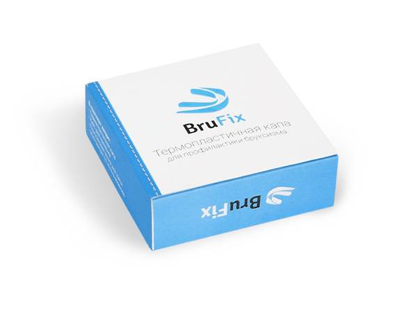
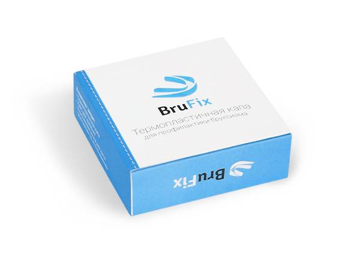
 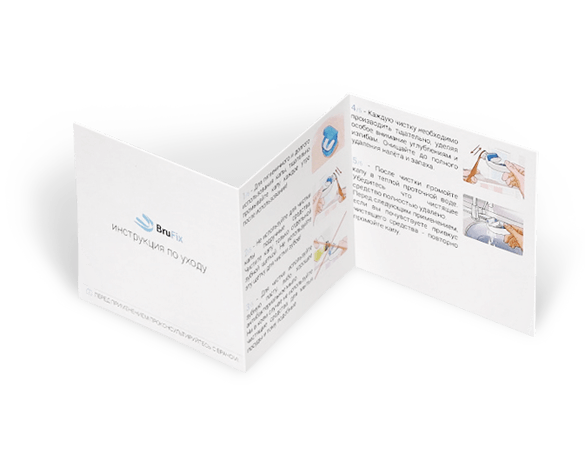
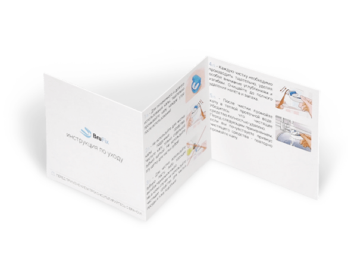
 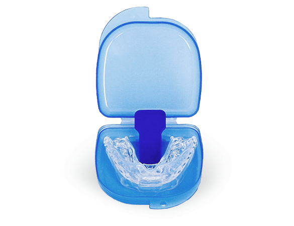
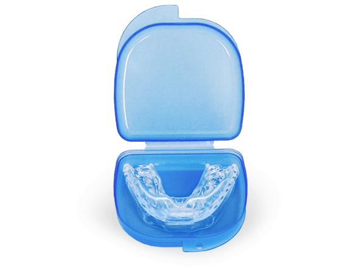
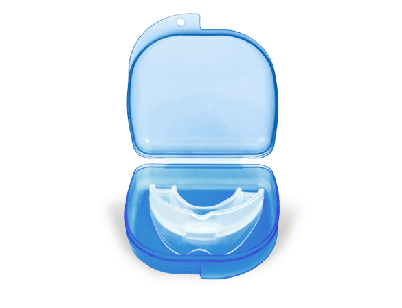
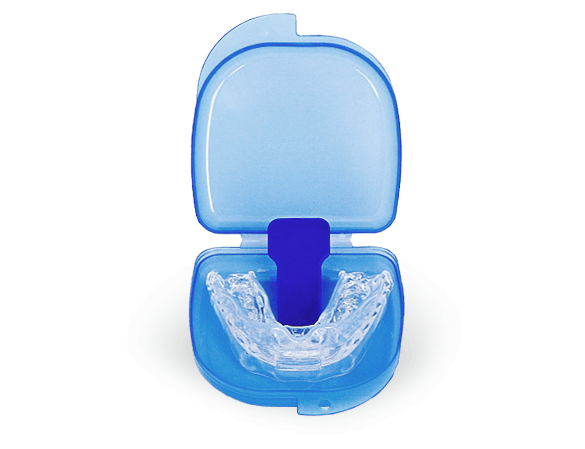
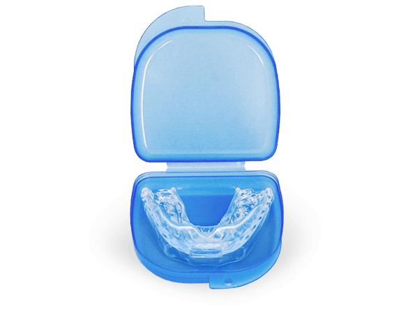
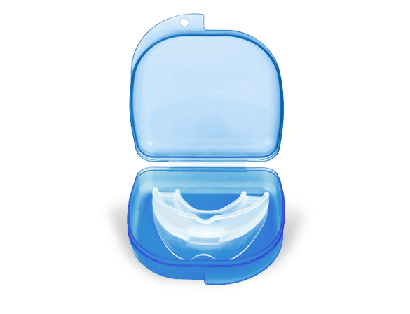
 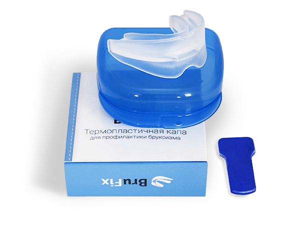
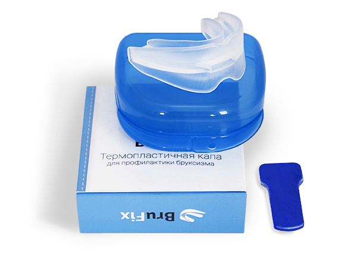